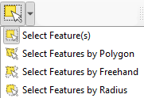
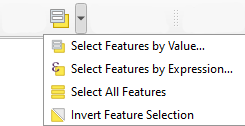
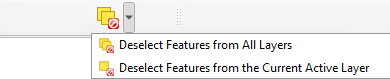
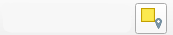

Praktikum 7 Sissejuhatus QGISi (2)
Praktikumis tegeleme põhiliselt andmetest alamhulkade valimisega, andmete digiteerimise ja kaartide koostamisega. Selleks kasutame kolme andmestikku:
- kuni 1917. aastani kehtinud kihelkonnapiiride andmestikku, milles võib olla ebatäpsusi (vektorandmed, polügoonid),
- muinsuskaitseameti kultuurimälestiste registrist pärit andmestikku, kus on ajaloo, arheoloogia, arhitektuuri ja kunstiga seotud muinsuskaitse all olevad mälestised (vektorandmed, punktid),
- Vorbuse asula uurimisala piire (vektorandmed, polügoon).
Laadime Moodle’ist praktikumi andmed alla ning avame kõik kihid QGISis. Pärast avamist vaatame ka andmete atribuuttabeleid, et näha millise info kaudu ruumiobjekte iseloomustatakse.
Vorbuse uurimisala kasutame hilisema harjutuse käigus, mistõttu võib selle esialgu välja lülitada.
7.1 Andmete valimine
Valiku tööriistad võimaldavad ruumiandmete kihil toimetada eraldi vaid mingi alamosaga koguandmestikust: näiteks teha päringuid või muuta atribuutide andmeid ainult teatud osal andmestikust. Samuti saame valiku tööriistade abil luua uusi alamandmestikke.
Joonis 7.1: Valimise tööriistad menüüribal
Objektide valimiseks teeme esmalt aktiivseks kihi, millelt valik teha. Valikut saab teha käsitsi või avaldiste abil. Valitud elemendid muutuvad vaikimisi kollaseks (värvi saab sätetes ka muuta). Tänases praktikumis vaatame põhiliselt käsitsi valimise võimalusi, avaldistest räägime lähemalt hilisemates praktikumides.
Valiku tööriistad:
- Select Features by Area or Single Click
- Select Feature(s): vali elemendid nendel hiirega klikkides, mitme elemendi korraga valimiseks hoia all Ctrl-klahvi;
- Select Features by Polygon: joonista hiirega polügoon, mille sisse jäävad elemendid valitakse, valiku lõpetamiseks tee paremklikk;
- Select Features by Freehand: joonista vabakäega mis tahes kujund, mille sisse jäävad elemendid valitakse, valiku lõpetamiseks tee uuesti vasakklikk;
- Select Features by Radius: vali elemendid, mis jäävad teatud raadiuse kaugusele määratud keskpunktist, keskpunkti määramiseks tee kuskil vasakklikk, valiku lõpetamiseks tee uuesti vasakkklikk;
- Select Feature(s): vali elemendid nendel hiirega klikkides, mitme elemendi korraga valimiseks hoia all Ctrl-klahvi;
- Select Features by Value
- Select Features by Value: vali elemendid, mille atribuuttabeli mingite tunnuste väärtused vastavad mingitele määratud väärtustele;
- Select Features by Expression: vali elemendid, mis vastavad avaldisega määratud tingimusele;
- Select All Features: vali kõik kihi elemendid;
- Invert Feature Selection: tee valik vastupidiseks (kõik valitud ehk kollased elemendid muutuvad mittekollaseks ja kõik mittekollased muutuvad kollaseks ehk valituks);
- Select Features by Value: vali elemendid, mille atribuuttabeli mingite tunnuste väärtused vastavad mingitele määratud väärtustele;
- Deselect Features from All Layers
- Deselect Features from All Layers: tühista valikud kõikidelt kihtidelt;
- Deselect Features from the Current Active Layer: tühista valikud ainult aktiivselt kihilt;
- Deselect Features from All Layers: tühista valikud kõikidelt kihtidelt;
- Select by Location: vali elemendid, mis vastavad mingile geomeetrilise suhte määratlusele (nt vali kõik polügoonid, mis osaliselt kattuvad mingi teise polügooniga). NB! Ei tööta, kui kiht on vigane!

Kõik valiku töööriistad leiad ka ülamenüüst: Edit → Select.
Katsetame!
Valime kaardil näiteks kõik Saaremaa kihelkonnad, joonistades Saaremaa ümber polügooni. Seejärel salvestame valitud kihelkonnad eraldi kihina, tehes kihil paremkliki ja valides Export → Save Selected Features As. Formaadiks võime valida geopackage. Anname kihile nime saaremaa_kihelkonnad.
Avame salvestatud kihi QGISis ja vaatame, kas sinna said ikka ainult Saaremaa kihelkonnad.
Joonis 7.2: Valimine polügooni joonistamise abil
Järgmiseks valime ainult need kultuurimälestised, mis jäävad Saaremaale. Üks võimalus on teha mälestiste kiht aktiivseks ning joonistada jällegi Saaremaa ümber polügoon. Teine võimalus on kasutada tööriista Select by Location ning küsida ainult neid punkte, mis jäävad loodud Saaremaa kihelkondade kihi piiridesse. NB! Alloleval gifil näidatud lahendus ei pruugi kohe töötada, kui kasutad 7. praktikumi materjalides kaasas olnud kihelkondade faili, ent töötab pärast seda, kui oleme allpool kihi geomeetria ära parandanud. Geomeetriliste suhete selgitusi saab lugeda näiteks siit.
Joonis 7.3: Valimine geomeetriliste suhete abil
Lõpuks valime kaardil Liivimaa kubermangu kihelkonnad, valides andmestiku atribuuttabelist ainult need read, milles tulbas kubermang on väärtus Liivimaa. Valime samamoodi kõik Liivimaa kultuurimälestised ja salvestame need eraldi kihina. Selleks, et vigaste polügoonidega hakkama saada, võib valida Settings → Options → Processing → General → Invalid features filtering ning muuta selle väärtus kas väärtuseks Do not filter (polügoonide terviklikkust ei kontrollita) või Skip (vigased polügoonid jäetakse välja).

Joonis 7.4: Valimine atribuutide ja geomeetriliste suhete abil
7.2 Vektorkihi geomeetria parandamine
Nägime, et vektorkihid võivad vahel olla geomeetriliselt vigased. Näiteks ristub polügooni piir iseendaga ja tekitab polügooni sisse “auke”. Mõnikord võib juhtuda ka, et jooned ei lõppe õiges kohas ära või hoopis ei jõua õigesse kohta välja (näiteks ristmike puhul).
Vektorkihi valiidsuse kontrollimise tööriista leiab, kui valida ülamenüüst Vector → Geometry Tools → Check Validity. Tööriista sisendiks on vektorkiht, mille geomeetriat kontrollida, ning väljundiks vaikimisi kolm kihti: valiidsed elemendid, vigased elemendid ja viga tekitavad kohad.
Joonis 7.5: Vektorkihi valiidsuse kontrollimine
Üks võimalus on kihid käsitsi ära parandada. Selleks tuleks teha algne vigane polügoonide kiht aktiivseks, vajutada üleval kollasel pliiatsil (Toggle Editing) ning valida kõrvalt tööriist Vertex Tool. Selle abil saab joonte ja polügoonide käänupunkte nihutada, kustutada ja uusi juurde lisada. Selle protsessi käigus võib aga juhtuda, et tekitame tahtmatult ise vigu juurde. Seetõttu on enamasti ohutum kasutada geomeetria parandamise tööriista Processing → Toolbox → Vector geometry → Fix geometries.
Joonis 7.6: Vektorkihi geomeetria parandamine
Ehkki see aitab palju tehniliselt, lubades kasutada erinevaid tööriistu, ei pruugi see lahendada alati päris probleemi, kui näiteks polügoonide piirid peaksid olema joonistatud samade koordinaatide põhjal, aga tegelikult polügoonide mingid osad kattuvad ja jäävad üksteise alla.
Joonis 7.7: Vektorkihi geomeetria parandamine (2)
7.3 Kihi ja andmete loomine
Harjutuse käigus tuleb märkida vanalt topograafiliselt kaardilt uurimispiirkonna piires Tartust u 7 km kirdes asuva Vorbuse asula läheduses oleva Metsaküla küla suuremad teed ja talud, mida tänapäeval enam pole. Piirkonnas toimusid 1960.–70. aastate maaparandusega (uute põldude rajamisega) seoses mitmed ümberkorraldused. Niisiis saab proovida, kuidas käib ise punkt- ja joonkihtide loomine.
Lisame WMS-teenusest ajaloolise topokaardi ja tänapäevase põhikaardi:
- Lülitame sisse Vorbuse uurimisala kihi ja liigume selle juurde (Zoom to layer). Muudame värviga täidetud polügooni ainult piirjoonteks (Symbology → Simple Fill asemel Simple Line).
- Lisame WMS kaardi Layer → Add layer → Add WMS/WMTS layer.
- Avanenud aknas klikime New. Seal määrame Name väärtuseks Maa-ameti ajaloolised kaardid, URLi juurde kopeerime aadressi https://kaart.maaamet.ee/wms/ajalooline? ja vajutame OK.
- Klikime Connect ja valime Ajalooline alt 45 ew_25T Eesti topograafiline kaart 1:25000 (1923–1935) ning seejärel Add → Close.
- Võime samamoodi lisada ka 19. saj lõpust pärineva üheverstase kaardi, valides 34 yheverstakaart.
- Lisame eelmise punktiga sarnaselt WMS-teenusest tänapäevase aluskaardi:
- Loome uue ühenduse või kasutame eelmises praktikumis seadistatud ühendust Maa-ameti aluskaart. Loomisel kasutame URLi http://kaart.maaamet.ee/wms/alus?.
- Valime rippmenüüst Maa-ameti aluskaart, klikime Connect ja valime Põhikaardid alt 2 pohi_vr2 värvilise rasteriseeritud Eesti põhikaardi mõõtkavas 1:10 000.
- Loome uue ühenduse või kasutame eelmises praktikumis seadistatud ühendust Maa-ameti aluskaart. Loomisel kasutame URLi http://kaart.maaamet.ee/wms/alus?.
- Vaatame põgusalt, kuidas on märgitud talud ja teed ajaloolisel topokaardil ja tänapäevasel põhikaardil.
- Muudame kihtide WMS-teenuse kaudu lisatud kihtide läbipaistvust, et näha, milliseid talusid tänapäeval enam ei ole.
- Ajalooliste kaartide kohta leiab rohkem infot ja leppemärgide seletused Maa-ameti ajalooliste kaartide lehelt.
Joonis 7.8: Talud ja teed ajaloolisel ja tänapäevasel kaardil
Loome uued tühjad kihid talude ja teede märkimiseks
- Ülevalt menüüst valime uue kihi tegemiseks Layer → Create Layer → New Geopackage Layer.
- Sirvimise ikoonile klikkides liigume kursuse andmete kausta. Paneme faili nimeks vorbuse_talud, valime vektorkihi tüübiks punktikihi (Geometry type → Point), koordinaatsüsteemiks EPSG: 3301 - Estonian Coordinate System of 1997. Lisame kihile ka uue atribuutide välja: New field all Name järele kirjutame nimi ja klikime Add to Fields List → OK.
Joonis 7.9: Uue kihi loomine
- Nüüd on talude märkimiseks loodud tühi kiht, mis ilmus ka kihtide paneelile. Seda kihti paneelil sisse-välja lülitades ei juhtu hetkel midagi, kuna sellel pole veel ühtegi punkti. Kihi atribuuttabelit vaadates on näha, et see on tühi.
- Loome sarnaselt talude kihile ka teede vektorkihi. NB! Valime õige vektorkihi tüübi (punktid, jooned või polügoonid)!
Märgime ajalooliselt kaardilt talud ja teed, mida tänapäeval enam pole. Talud on kaardil tähistatud kandilise viirutatud alaga, millel asuv must punkt tähistab hoonet.
- Klikime kihtide paneelil kihil vorbuse_talud ja vajutame üleval tööriistaribal kollasele pliiatsile (või Layer → Toggle editing). Pliiatsi kõrval olevad ikoonid muutuvad värviliseks. Vali kolme punktiga ikoon Add Point Feature. Nüüd saad kaardile punkte märkida.
- Klikime ajaloolisel topograafilisel kaardil talu peal. Avanenud aknas laseme id automaatselt määrata, aga kirjuta nime juurde võimalusel märgitud talu nime.
- Kui kõik talud on märgitud, siis salvestame muudatused. Selleks vajutame tööriistaribal kollase pliiatsi kõrval disketina kujutatud salvestamise ikoonile (Save Layer Edits). Lülitame muutmise/toimetamise välja, vajutades uuesti kollasel pliiatsil.
- Nüüd peaksid näha olema kõikide talude peal värvilised punktid.
- Muudame punktide kuju, värvi ja suurust, et need paremini välja paistaksid, ning lisame nimesildid.
- Selleks, et sildid paremini välja paistaksid, võib Labels menüüs Background alt teha linnukese Draw background ees ja Placement juures valida Mode väärtuseks Offset from Point, paigutuseks tekst sümboli kohal ning tekst sümbolist -3 millimeetri võrra “allpool” (ehk 3 mm võrra üleval). Selle tulemusena on siltide tekst taust valge ja sildid asuvad punktist piisavalt kaugel.
- Muudame punktide kuju, värvi ja suurust, et need paremini välja paistaksid, ning lisame nimesildid.
Joonis 7.10: Digiteeritud talud
Märgime kihil vorbuse_teed uurimispiirkonna piires need teed, mida tänapäevasel kaardil enam pole. Ärme märgime väga väikseid teid ega teid, mille asukoht või kurvilisus on ainult pisut muutunud.
- Teede märkimine käib sisuliselt samamoodi nagu punktide märkimine. Kolme punktiga ikooni asemel on tööriistaribal samas kohas aga lihtsalt nurgelise joonega ikoon.
- Märgime tee punktide abil joonena. Joone lõpetamiseks teeme paremkliki ja anname sellele järjekorranumbri. Joone paksust saab muuta samal viisil nagu punktil.
- Selleks, et teed lõikuksid samas sõlmpunktis, lülitame sisse snap’imise: teeme tööriistaribal paremkliki, teeme linnukese Snapping Toolbar ette ja klikime hobuseraua/magneti ikoonil.
- Kui oleme talud ja teed märkinud, siis lülitame ajaloolise aluskaardi või mõlemad aluskaardid välja.

Joonis 7.11: Digiteeritud teed
7.4 Kaartide kujundamine ja eksportimine
Kui kaardiaknas on loodud sobiv lahendus ehk kõik talud ja teed on märgitud, siis ekspordime selle kaardina. Korraliku kaardi tegemiseks:
- valime ülevalt menüüst Project → New Print Layout. Anname sellele sobiva nime.
- Avanenud Print Layout aknas valime ülevalt Add Item → Add Map. Joonistame akna valgele lehele nelinurga, hoides all hiire vasakpoolset klahvi. QGIS-i peaaknas olev kaart kuvatakse sinna. Teeme nelinurga sama suureks kui valge taust. Alternatiivina võib parema väljanägemise huvides jätta kaardi ja tausta serva vahele u 1 cm vahe. Seejuures on abiks taustaruudustik ja selle külge haakimine (snapping). Nende sisselülitamiseks valime Print Layout akna üleval menüüst View → Show Grid ja View → Snap to grid. Nüüd saame kaarti taustaruudustiku külge haakida.
- Sätime kaarti nii, et kõik vajalik oleks näha. Selleks valime Edit → Move Content või vajutame klaviatuuril C. Liigutame kaarti hiire vasakpoolset klahvi all hoides. Paremal servas Item properties alt saab valida kaardi mõõtkava (Scale), et kaarti suuremaks või väiksemaks teha.
- Lisame kaardile joonmõõtkava. Add item → Add Scale Bar ja klikime kaardil. Paremal Item properties → Segments saab muuta muuta mõõtkava pikkust ja stiili. Lisame paremale poole nii palju ühikuid, kui soovime. Fixed width muudab mõõtkava ühe ühiku pikkust. Style rippmenüüst saad valida endale meelepärase stiili.
- Lisame kaardile põhjasuunda tähistava noole. Add item → Add North Arrow ning klikime kaardil. Paigutame noole kasti kaardi ühte ülemisse nurka. Paremal Item properties all saab valida soovi korral mõne muu noole.
- Lisame kaardile enda nime ja viite Maa-ametile. Add Item → Add Label ning klikime kaardil. Paigutame tekkinud kasti kaardi ühte nurka. Paremal Item properties all kirjuta enda nimi ning viide Maa-ameti andmetele. Nt Aluskaart: Maa-amet 2022.
- Ekspordime kaardi kursuse kausta. Üleval servas valime vasakul Layout → Export as Image. Anname sellele mõistliku nime. Avanenud aknas vajutame Save.
- Avame kaardi kursuse kaustas ning vaatame, kas kõik jäi õigesti.
Joonis 7.12: Valmis kaart